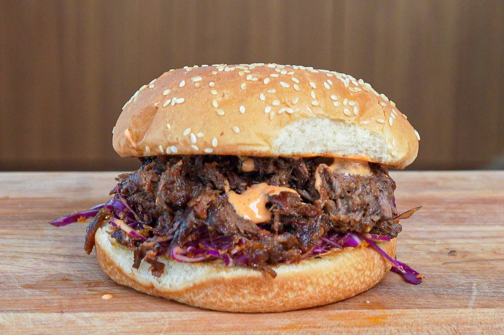

Japanese Beef Sandwich

Japanese Beef Sandwich & Freezer Braised Meat
A delicious japanese beef sandwich with vegetables and superb spices.
Ingredients
- Braised Beef
- Red or Grenn Cabbage
- Carrot
- Ginger
- Garlic
- Lemon
- Kewpie Mayo
- Rice Wine Vinegar
- Soy Sauce
- Sriracha
- Buns
Steps
- Sear the braised meat ; Set a pan over medium heat and toss the frozen braised beef square right in. The fat will start to melt down into the pan and crisp up the beef.
- Let the beef cook and start to brown on one side before flipping it over.
- Break up the beef and let it all crisp for another 2 to 3 minutes. Then, add just enough Japanese bbq sauce to coat it. Stir to incorporate the sauce, and then set the beef aside
- Make the slaw ; Mix together all Carrot Ginger Slaw Components. Taste and adjust with more dressing components if needed.
- Assemble the sandwich ; First, toast the buns and optionally spread an extra layer of sriracha & mayo to each sides of the bun.
- Next, come in with a layer of the Carrot Ginger Slaw, then add the beef. Close the sandwich and enjoy.